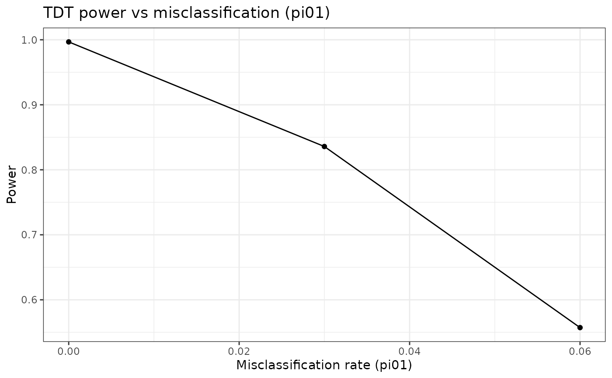

Plot TDT Power Sensitivity to Phenotype Misclassification
Source:R/tdt_functions.R
plot_tdt_power_phenotype_misclassification.RdPlot TDT power vs phenotype misclassification rate (pi01), holding heterogeneity fixed.
Usage
plot_tdt_power_phenotype_misclassification(
pd,
prev,
R1,
R2,
alpha = 0.05,
delta_prime = 1,
N,
misclass_seq = seq(0, 0.15, by = 0.01),
heter_fixed = 0,
title = "TDT power vs misclassification (pi01)"
)Arguments
- pd
Numeric in (0,1). High-risk allele frequency at the marker.
- prev
Numeric in (0,1). Disease prevalence (phi1).
- R1, R2
Numeric. Genotype relative risks.
- alpha
Numeric. Significance level (default 0.05).
- delta_prime
Numeric. LD scale parameter (default 1).
- N
Integer. Number of affected trios.
- misclass_seq
Numeric vector. Sequence of misclassification rates.
- heter_fixed
Numeric. Heterogeneity rate held fixed (default 0).
- title
Character. Plot title.
Details
The x-axis is phenotype misclassification probability
\(\pi_{01}\) and the y-axis is the corresponding power from
tdt_power(). N is a fixed number of affected trios;
heter_fixed and all genetic-model parameters remain fixed while
misclass_seq is swept.
Examples
# Power sensitivity to phenotype misclassification
plot_tdt_power_phenotype_misclassification(
N = 600,
pd = 0.30,
prev = 0.05,
R1 = 1.5,
R2 = 2.25,
misclass_seq = c(0, 0.03, 0.06),
heter_fixed = 0
)
